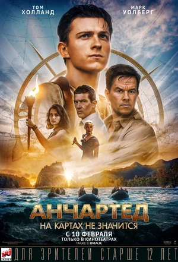

Топ-5 любимых фильмов
-
Бэтмен (The Batman)

После двух лет поисков правосудия на улицах Готэма для своих сограждан Бэтмен становится олицетворением беспощадного возмездия. Когда в городе происходит серия жестоких нападений на представителей элиты, улики приводят Брюса Уэйна в самые темные закоулки преступного мира, где он встречает Женщину-Кошку, Пингвина, Кармайна Фальконе и Загадочника. Теперь под прицелом оказывается сам Бэтмен, которому предстоит отличить друга от врага и восстановить справедливость во имя Готэма.
В главных ролях- Роберт Паттинсон
- Зои Кравиц
- Пол Дано
- Джеффри Райт
О фильме-
РежиссерМэтт Ривз
-
СценарийМэтт Ривз, Питер Крэйг, Билл Фингер
-
ПродюсерДилан Кларк, Мэтт Ривз, Майкл Э. Услан
-
ОператорГрег Фрейзер
-
КомпозиторМайкл Джаккино
-
Всё везде и сразу (Everything Everywhere All at Once)

Эвелин получает доступ к воспоминаниям, эмоциям и невероятным способностям других версий себя. Теперь она может прожить тысячи жизней и быть кем угодно — известной актрисой, мастером боевых искусств, оперной дивой и даже небесным божеством. Но всем мультивселенным угрожает таинственная сущность, с которой Эвелин предстоит сразиться. Как знать, возможно, заодно она разберётся и с самым страшным злом — своими налогами.
В главных ролях- Мишель Йео
- Джейми Ли Кёртис
- Ке Хюи Куан
- Стефани Сюй
О фильме-
РежиссерДэн Кван, Дэниэл Шайнерт
-
СценарийДэн Кван, Дэниэл Шайнерт
-
ПродюсерДэниэл Шайнерт, Эллисон Роуз Картер, Сара Финн
-
ОператорЛаркин Сайпл
-
КомпозиторСон Люкс
-
Лулу и Бриггс (Dog)
Профессиональный военный Джексон Бриггс всеми силами пытается вернуться в строй, но из-за травмы головы получает постоянные отказы. Когда умирает один из его сослуживцев, Бриггсу дают задание: с военной базы в штате Вашингтон доставить на похороны в аризонский Ногалес боевую подругу почившего — нервную бельгийскую овчарку Лулу с целым спектром посттравматических расстройств. Поскольку собака боится летать, сделать это придётся на машине по Тихоокеанскому побережью, и эта поездка будет не самым простым заданием Бриггса.
В главных ролях- Ченнинг Татум
- Джейн Адамс
- Кевин Нэш
- К’Орианка Килчер
О фильме-
РежиссерРид Каролин, Ченнинг Татум
-
СценарийРид Каролин
-
ПродюсерГрегори Джейкобс, Питер Кирнан, Бетси Дэнбьюри
-
ОператорНьютон Томас Сигел
-
КомпозиторТомас Ньюман
-
Анчартед: На картах не значится (Uncharted)
Два искателя приключений Нейтан Дрейк и Виктор Салливан по прозвищу Салли отправляются на поиски величайшего сокровища мира. Кроме того, они надеются найти улики, которые приведут их к давно потерянному брату Нейтана.
В главных ролях- Том Холланд
- Марк Уолберг
- Антонио Бандерас
- София Тейлор Али
О фильме-
РежиссерРубен Фляйшер
-
СценарийАртур Маркам, Мэтт Холлоуэй, Рэйф Джадкинс
-
ПродюсерЧарльз Ровен, Ави Арад, Алекс Гартнер
-
ОператорЧон Джон-хунр
-
КомпозиторРамин Джавади
-
Фантастические твари: Тайны Дамблдора (Fantastic Beasts: The Secrets of Dumbledore)
Профессор Альбус Дамблдор узнает, что могущественный тёмный волшебник Геллерт Грин-де-Вальд планирует захватить власть над миром. Понимая, что не сможет остановить его в одиночку, Дамблдор просит магозоолога Ньюта Саламандера возглавить команду выдающихся волшебников и одного отважного магла-пекаря. Им предстоят невероятно опасные приключения, встреча со старыми и укрощение новых магических существ и борьба со сторонниками Грин-де-Вальда, которых становится все больше.
В главных ролях- Эдди Редмэйн
- Джуд Лоу
- Эзра Миллер
- Дэн Фоглер
О фильме-
РежиссерДэвид Йейтс
-
СценарийСтивен Кловз, Дж.К. Роулинг
-
ПродюсерНил Блэр, Дэнни Коэн, Дэвид Хейман
-
ОператорДжордж Ричмонд
-
КомпозиторДжеймс Ньютон Ховард